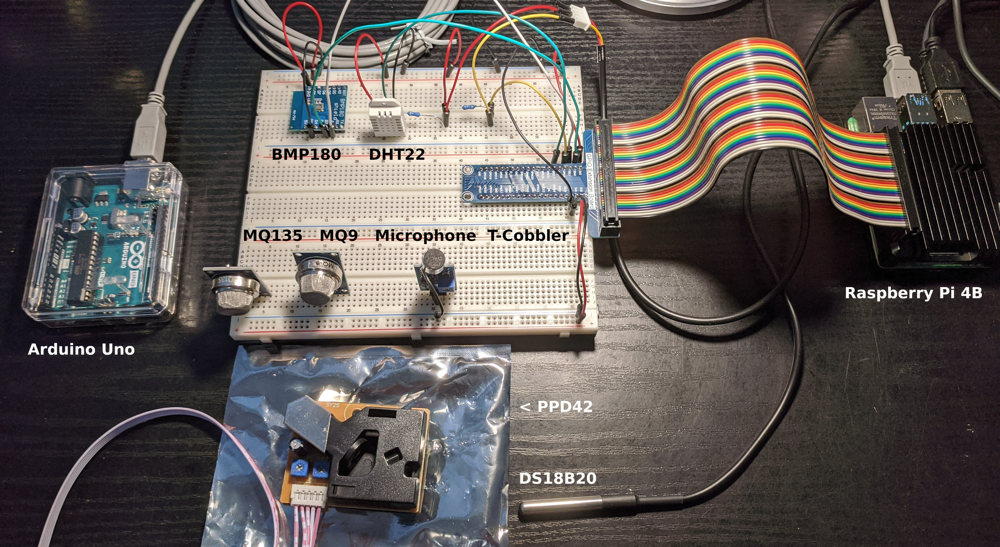
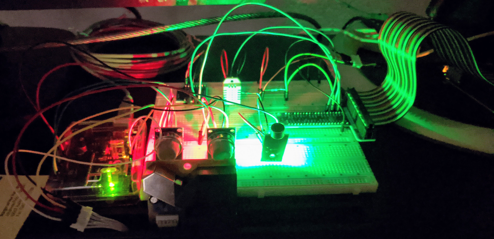

This page is under construction
 Currently (2020-07-01) temperature (BMP180, DHT22, DS18B20), atmospheric pressure (BMP180), and relative humidity (DHT22) are read directly from sensors with Python libraries (mostly Adafruit) on the Raspberry Pi. The T-cobbler breakout board and ribbon cable serve to make interfacing and wiring up the Raspberry Pi a lot easier The same routine also uses temperature and relative humidity (RH) to calculate dew point, since this is a lot more informative (to me, at least) than RH.
MQ9 and MQ135 gas sensors and the PPD42 particle counter are connected to the Arduino Uno: The gas sensors have an analog output, so they interface directly with the Arduino but would require and A-to-D converter to go directly to the Raspberry Pi. The PPD42 runs on a digital 5V out which lines up with the Arduino - for the Raspberry Pi a voltage divider or step-down would be required. This is a long way of saying I could use the Raspberry Pi for everything, but I have an Arduino, so why not? (I do, however, hope to exploreprogramming the Arduino directly from the same Python program as runs the sensors wired directly to the Raspberry Pi, just to tie a neat bow on the software.) The gas and particle sensors are present in order to get an absolute measure on pollutants like CO, NOx and PM2.5 and then to use CO2 levels to calculate some gross emission factors. Finally, ambient sound levels are monitored with a microphone producing just a simple analog signal which is read and recorded. The whole thing is on my desk running and recording right now, just waiting for me to find some time to do a little analysis - might be a week or two... I have not yet dug into normalizing/baselineing/calibrating anything, but I'll plan on doing that in the post-processing.
The code for this project is being maintained on github.